The most obvious thing about equation (1) is its
fixed point
| 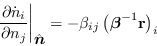 | (5) |
Stability of the fixed point requires that this matrix should be
negative definite. Since the
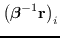 are
all negative by virtue of (3), each minor
determinant of this matrix is equal to a minor determinant of  multiplied by a positive number, stability of the equilibrium is
equivalent to
multiplied by a positive number, stability of the equilibrium is
equivalent to  being negative definite.
being negative definite.
A weaker condition is to require that the system remain bounded with
time:
As  becomes large in any direction, this functional is dominated
by the quadratic term, so this implies that
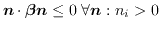. Negative definiteness of
becomes large in any direction, this functional is dominated
by the quadratic term, so this implies that
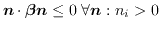. Negative definiteness of  is sufficient,
but not necessary for this condition. For example, the predator-prey
relations (heavily normalised) have the following matrix as
is sufficient,
but not necessary for this condition. For example, the predator-prey
relations (heavily normalised) have the following matrix as  :
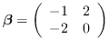
which has eigenvalues 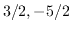. If we let
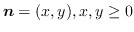, then
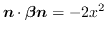, which is clearly non-positive
for all
:
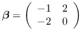
which has eigenvalues 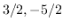. If we let
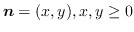, then
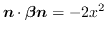, which is clearly non-positive
for all  .
.
Consider adding a new row and column to  . What is condition is
the new row and column required to satisfy such that equation
(6) is satisfied. Break up
. What is condition is
the new row and column required to satisfy such that equation
(6) is satisfied. Break up  in the following
way:
in the following
way:
Condition (6) becomes:
Let
The maximum value with respect to 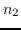 is
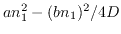, so
this requires that